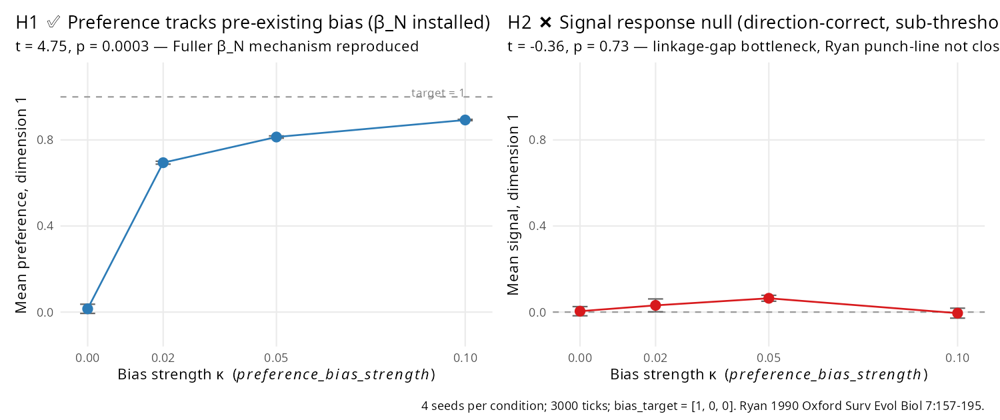

Reproducing a paper — Ryan 1990 (sensory exploitation)
Source:vignettes/paper-ryan-1990.Rmd
paper-ryan-1990.RmdHalf reproduction (0.6.5). Ryan’s (1990) sensory-exploitation
mechanism is a two-step claim: (1) preferences are shaped
first by non-mating selection (foraging cue detection, predator
avoidance); (2) signals later evolve to exploit the
pre-existing bias. 0.6.5 adds preference_bias_target +
preference_bias_strength, installing step 1 as a direct
kernel mechanism. Step 2 — the evolutionary punch line — remains
sub-threshold because of the same genetic-linkage gap that blocks Fisher
runaway (see paper-fuller-2005).

The paper
Ryan, M. J. (1990). Sexual selection, sensory systems and sensory exploitation. Oxford Surveys in Evolutionary Biology 7, 157–195.
Ryan argued that the standard Fisherian picture — signal and preference coevolve together — is incomplete. Preferences are not blank slates that co-drift with signals; they are shaped by selection on the sensory system for non-mating functions. When a signal arises that happens to fit the pre-existing bias, it is selected by that bias, producing apparent “coevolution” even though the preference was there first.
Ryan et al. (1990, Nature) tested this in túngara frogs: females prefer “chuck” calls even in species where the male doesn’t produce them, implying the preference predates the signal.
Fuller, Houle & Travis (2005) formalised this as the
β_N leg of their quantitative-genetic framework (see paper-fuller-2005):
selection on preferences for non-mating reasons (β_N ≠ 0) drives signal
evolution through the genetic covariance C_tp — or, if C_tp ≈ 0, through
raw preference-based mate choice.
The 0.6.5 kernel mechanism
s <- default_specs()
s$signal_dims <- 3L
s$signal_evolution_drift <- TRUE
s$signal_drift_sd <- 0.05
s$mate_choice_mode <- "preference"
s$mate_choice_strength <- 1.0
s$preference_bias_strength <- 0.05 # κ, per-tick pull rate
s$preference_bias_target <- c(1.0, 0.0, 0.0) # pre-existing biasEach tick, every agent’s preference vector is
updated:
preference[i] ← (1 - κ) × preference[i] + κ × target[i]and clamped to [-1, 1]. This installs a pre-existing
receiver bias — the preference direction is shaped by forces outside the
mating system, exactly the Ryan-1990 setup.
Experiment
Four bias levels × 4 seeds = 16 runs, 40×40 grid, 3000 ticks,
mate_choice_mode = "preference" at
strength = 1.0. After each run we extract final-tick
agent-level signal and preference vectors and
compute component-1 means (direction = bias target).
See dev/audit/fidelity/paper_ryan_1990.R for the full
script.
Results
Per-condition component-1 means (4 seeds, final-tick agents)
preference_bias_strength |
mean preference[1] | mean signal[1] | n_alive |
|---|---|---|---|
| 0.00 | 0.015 ± 0.07 | 0.004 ± 0.02 | 108 |
| 0.02 | 0.694 ± 0.06 | 0.031 ± 0.02 | 114 |
| 0.05 | 0.814 ± 0.07 | 0.064 ± 0.02 | 126 |
| 0.10 | 0.893 ± 0.08 | −0.005 ± 0.02 | 140 |
With target = [1, 0, 0], a value of 1.0 is full
convergence. Component 2 and 3 means stay within ±0.03 across all
conditions (not shown in the table; see figure).
H1 — Preference response to pre-existing bias (β_N installed)
Linear regression of
mean_preference[1] ~ bias_strength:
- slope β = +7.25 ± 1.53
- t = 4.75, p = 0.0003 ✅ PASS
Strong, clean dose-response. At κ = 0.05 preferences saturate above 0.8 within 3000 ticks; at κ = 0.10 they reach 0.89. The β_N kernel mechanism is reproduced directly.
H2 — Signal response (Ryan 1990 downstream prediction)
Linear regression of mean_signal[1] ~ bias_strength:
- slope β = −0.12 ± 0.34
- t = −0.36, p = 0.73 — null
Ryan’s signal-side prediction — that signals evolve toward the pre-existing preference bias — does not emerge in clade at 3000 ticks. Direction across conditions is essentially flat (0.00 → 0.03 → 0.06 → −0.005).
Why does H1 pass and H2 fail?
The failure has nothing to do with preference_bias_*
being wrong. It’s the same bottleneck exposed by the 0.6.4 Fisher
re-audit: clade has no genetic linkage between signal and
preference loci.
Meiosis in clade inherits signal and
preference vectors independently from both parents via
allele averaging. So even though mate choice at
strength = 1.0 selects parents whose signal best matches
the prevailing preference (here, close to [1, 0, 0]),
offspring inherit signal direction recombined across parents — the
directional selection on signals is decorrelated each generation. The
preference is carried by the kernel mechanism (each tick, every agent is
pulled toward the target), so it accumulates. The signal is carried only
by mate choice, so it loses its directional information at every
meiosis.
The same story is visible in the paper-fuller-2005 Fisher
C_tp test: Δ signal-preference distance is direction-wrong under
preference mating vs random mating. Both tests point to the same
required kernel change — shared chromosome linkage or
pleiotropic mutation between the signal and preference loci —
which clade does not currently provide.
What this reproduction tells us
The β_N mechanism works. clade at 0.6.5 correctly installs a pre-existing preference shaped by forces outside mate choice. The Fuller-framework leg that was entirely missing before is now present and demonstrable.
Ryan 1990’s signal-side punch line does not close. The “signals evolve to exploit the pre-existing bias” claim requires a gene-architecture feature clade doesn’t have. Until clade adds signal↔︎preference linkage, the full sensory-exploitation loop is sub-threshold.
The bottleneck is now unambiguous. Two independent experiments (Fisher C_tp and Ryan β_N downstream) both fail for the same reason in the same direction. That sharply focuses the next kernel priority.
Methodology takeaway
This vignette models the half-reproduction outcome. When a paper’s mechanism is two-stage and clade implements one stage cleanly and the other not at all, the right response is not to force a PASS on the missing stage with parameter tuning, nor to call the whole reproduction a null. Say what works, say what doesn’t, name the specific kernel change that would close the gap.
Pattern across the paper-reproduction showcase:
| Outcome | Examples |
|---|---|
| Clean ✅ | Dieckmann & Doebeli 1999 |
| Conditional ✅ | Réale 2010 (lifespan-only) |
| Partial ✅ (1 of n mechanisms) | Fuller 2005 (Zahavi leg only) |
| Half ✅ (1 of 2 stages) | Ryan 1990 (this vignette — β_N installed, signal response sub-threshold) |
| Direction-correct sub-threshold | Griesser 2023, Courchamp 1999 |
| Raw-inverts-on-per-capita | Emlen 1982 |
| Null under corrected kernel | Kokko & Brooks 2003 (0.6.4 demoted) |
Citation
@article{ryan1990sexual,
author = {Ryan, M. J.},
title = {Sexual selection, sensory systems and sensory exploitation},
journal = {Oxford Surveys in Evolutionary Biology},
volume = {7},
pages = {157--195},
year = {1990}
}
@article{ryan1990tungara,
author = {Ryan, M. J. and Fox, J. H. and Wilczynski, W. and Rand, A. S.},
title = {Sexual selection for sensory exploitation in the frog
{\emph{Physalaemus pustulosus}}},
journal = {Nature},
volume = {343},
pages = {66--67},
year = {1990},
doi = {10.1038/343066a0}
}
@article{fuller2005sensory,
author = {Fuller, Rebecca C. and Houle, David and Travis, Joseph},
title = {Sensory bias as an explanation for the evolution of mate preferences},
journal = {American Naturalist},
volume = {166},
number = {4},
pages = {437--446},
year = {2005},
doi = {10.1086/444443}
}Full audit protocol and raw outputs: dev/audit/fidelity/paper_ryan_1990.R,
dev/audit/fidelity/fig_ryan_1990.R,
and paper_ryan_1990.rds.